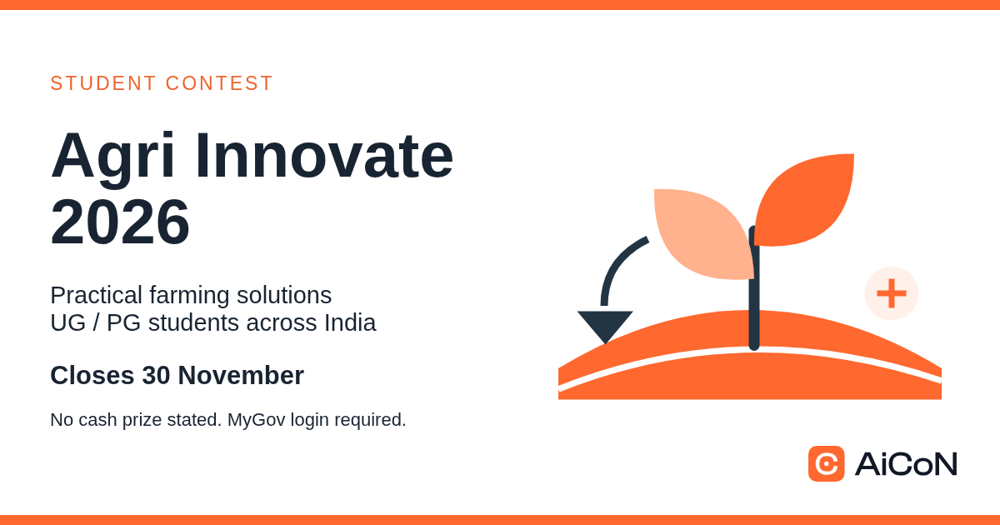
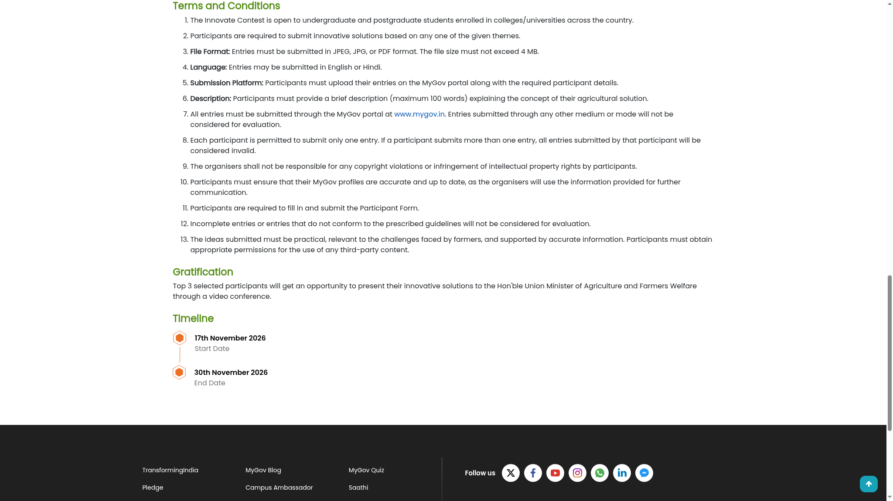
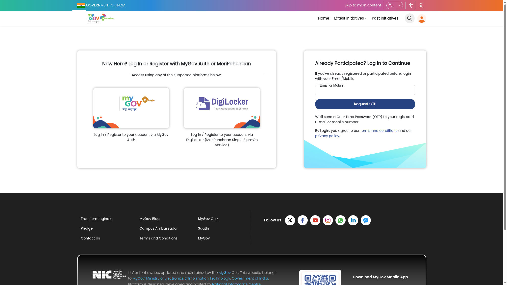

Agri Innovate 2026: submit a practical farming solution by 30 November
MyGov and the Ministry of Agriculture and Farmers Welfare have opened Agri Innovate for undergraduate and postgraduate students enrolled in colleges or universities across India. Participants can submit a practical solution to a listed farming problem. The top three selected participants get an opportunity to present their solutions to the Union Agriculture Minister through a video conference.
This is a presentation opportunity, not a scholarship, grant, paid internship or funding commitment. Submission requires MyGov authentication. We followed the public entry link to the login page but did not sign in, inspect the logged-in participant form or submit an entry. This notice guide explains the published rules, not a completed application test.

Who can participate?
The official terms say the contest is open to undergraduate and postgraduate students enrolled in colleges/universities across the country. That includes eligible students studying in Kerala. The introduction speaks about agricultural students and innovators, while the eligibility clause does not explicitly restrict participation to an agriculture degree. We have not established an additional course restriction, age limit or team-entry rule from the published notice. Do not assume that school students, graduates no longer enrolled or an entire team qualify.
The idea must address one of the official themes, be practical and relevant to farmers, and use accurate information. A college ID or enrolment document may be useful to have ready, but the public rules do not establish an exact mandatory proof or upload format for student status. Check the real participant form after login.
The deadline and stated reward
The published window is 17-30 November 2026. The notice does not give a closing clock time or a timezone-specific cutoff. Submit early rather than assuming midnight is safe.
The stated reward is an opportunity for the top three selected participants to present their innovative solutions to the Union Agriculture Minister by video conference. No cash amount, certificate, travel, incubation, pilot funding, job or commercial contract is promised in the rules we checked. Selection criteria, a results date and the video-conference date are not specified there.
What you need to prepare
- One entry only: more than one entry from a participant makes all their entries invalid under the published terms.
- One listed theme: choose the farming problem that actually matches your solution.
- File: JPEG, JPG or PDF, no larger than 4 MB.
- Language: English or Hindi. Malayalam is not listed as a submission language.
- Explanation: a description of up to 100 words explaining the solution's concept.
- Participant details: the organiser requires its Participant Form and an accurate, up-to-date MyGov profile.
The rules do not specify a PDF page count, required pitch-deck length or mandatory prototype stage. We are not inventing those requirements. Keep the entry concise and readable. Describe what has actually been built or tested, distinguish a proposed idea from a working device, and do not fabricate evidence, yield improvements or cost savings.

Which problems can an entry address?
The official page lists 22 themes. They cover excessive chemical fertiliser/pesticide use; water wastage; integrated pest management; crop residue; unsustainable farming; soil biological health; monocropping; soil fertility; pollution; groundwater depletion; erosion; salinity/waterlogging; agricultural biodiversity; pest and weed resistance; imbalanced fertiliser use; soil organic carbon; excessive tillage; climate vulnerability; natural-resource depletion; crop rotation; agricultural waste; and greenhouse-gas emissions.
Use the exact list on the official page when choosing your theme. A clear entry can state the farmer's problem, your solution, how it would be used, what evidence supports it and what still needs testing. This is preparation advice, not an official judging rubric.
The verified entry route, and where our check stops
- Open the official Agri Innovate page linked below and read its current Terms and Conditions, Gratification and Timeline sections.
- Prepare the single permitted entry and the explanation of no more than 100 words. Check file type, size, language and third-party permissions.
- Choose Submit your Entry. In our public check this led to the Innovate India authentication page, with MyGov Auth, DigiLocker/MeriPehchaan and an existing-participant email/mobile OTP option.
- Sign in yourself through the official route. We did not enter an email/mobile, request an OTP, connect an identity account or inspect the participant form behind authentication.
- Read the actual form and any further declaration before uploading. Complete all required participant details accurately. If later requirements are unclear, clarify them with the organiser before submitting.
- Review the single-entry rule before the final action. If a confirmation or acknowledgement is generated, retain it. We did not test submission or establish whether editing or withdrawal is available.

Protect your work and information
The organiser places responsibility for copyright and third-party content permissions on participants. Use your own text, drawings and photographs, or material you have permission to use. Do not include someone else's personal data, a farmer's identifiable records or unpublished confidential research without permission. The notice does not establish patent protection or confidentiality for an entry. If disclosure could affect an invention, seek suitable advice before uploading it.
Entries sent outside the prescribed MyGov route are not considered. Do not send an idea or identity document to a social-media commenter claiming they can guarantee selection. No cash prize is stated, and an unsolicited fee request is not part of the verified notice.
Official links and updates
- Official Agri Innovate page: eligibility, themes, submission link and timeline.
- Observed Innovate India login page. Start from the contest's Submit your Entry control to preserve the destination.
No reliable English or Malayalam walkthrough video for this exact contest was verified in our search. Current official rules and the observed login boundary are safer than a tutorial for a different MyGov activity. AiCoN independent notice guide, checked 17 November 2026. Follow later organiser updates; we have not completed or submitted an application.